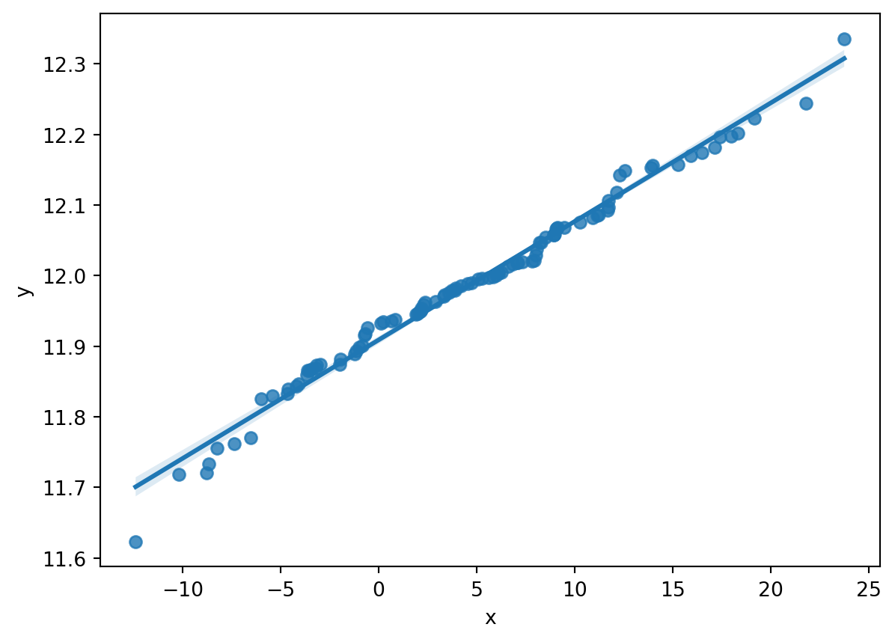
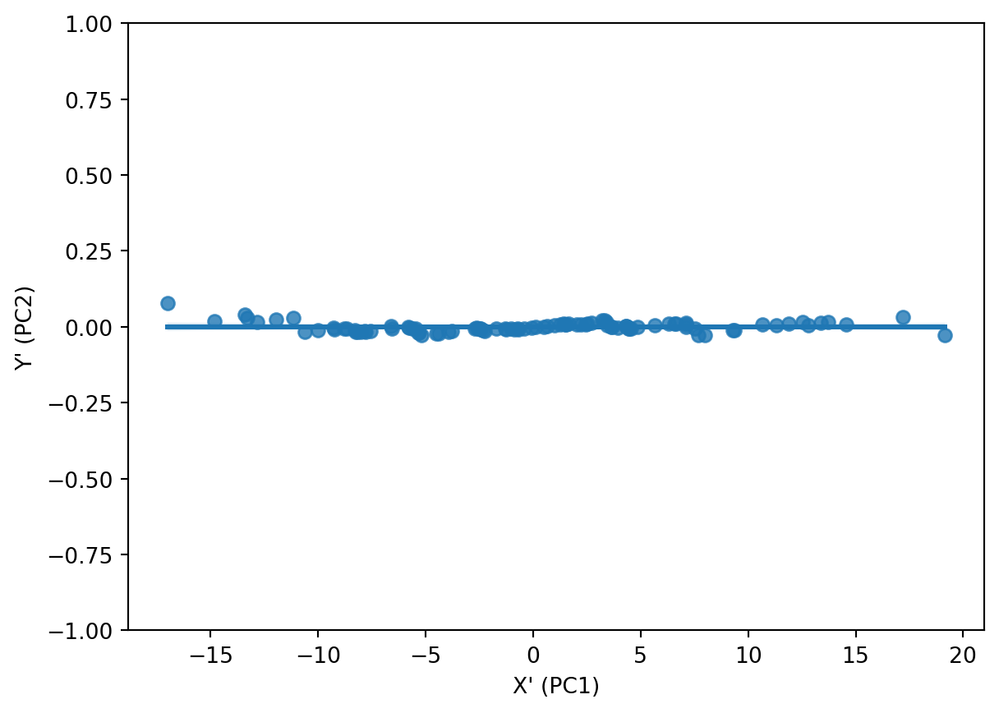
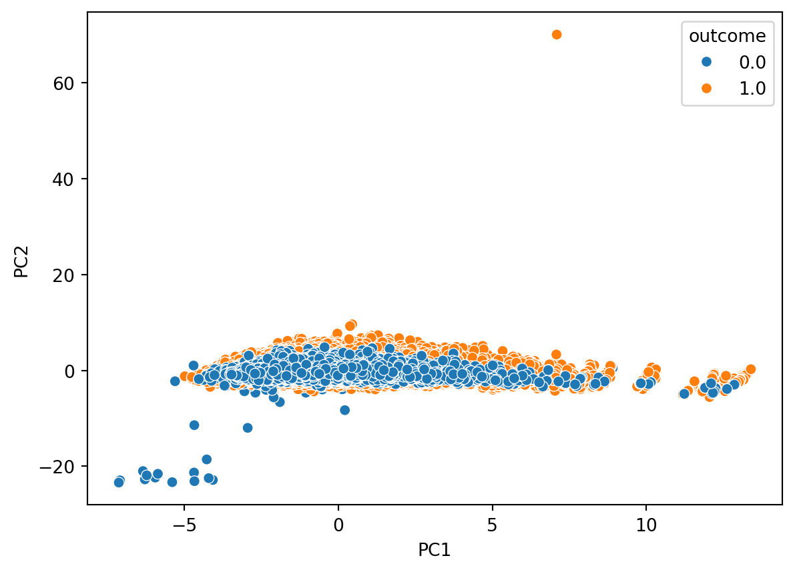
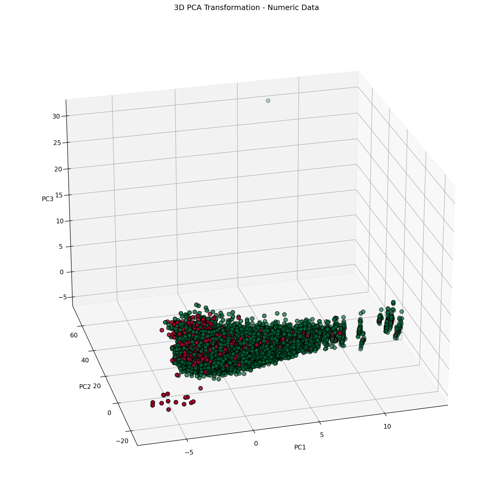

3 Principal Component Analysis
3.1 Overview
Principal component analysis (or PCA) is the act of rotating in combination with stretching or squishing the axes of a multi-dimensional dataset to better align with its direcitonality in multidimensional space. By realigning the axes, the variation within the data can be more directly tied to and explained by the axes (also called Principal Components). In some cases, the transformation can be so profound such that a substantial amount of the data’s variation can be explained using fewer dimensions.
Consider the below graphic:
The X and Y values of this data appear to be connected, correlated even. Note - PCA is NOT a correlation analysis, but leverages any existing correlation in the data between one or more variables to transform the basis of each datapoint and vector in the data.
The goal of PCA is to remove strong corrlelations with high R values from the data by realigning axes of the data along the directions in the data which contain the greatest variance in the data. The above plot appears to show that the x-coordinate is a good predictor for the y-coordinate, and a simple linear regression analysis reveals that this is the case.
| Dep. Variable: | y | R-squared: | 0.985 |
| Model: | OLS | Adj. R-squared: | 0.985 |
| Method: | Least Squares | F-statistic: | 6400. |
| Date: | Wed, 16 Oct 2024 | Prob (F-statistic): | 4.49e-91 |
| Time: | 19:39:52 | Log-Likelihood: | 274.70 |
| No. Observations: | 100 | AIC: | -545.4 |
| Df Residuals: | 98 | BIC: | -540.2 |
| Df Model: | 1 | ||
| Covariance Type: | nonrobust |
| coef | std err | t | P>|t| | [0.025 | 0.975] | |
| const | 11.9091 | 0.002 | 6468.253 | 0.000 | 11.905 | 11.913 |
| x1 | 0.0168 | 0.000 | 80.000 | 0.000 | 0.016 | 0.017 |
| Omnibus: | 41.522 | Durbin-Watson: | 0.564 |
| Prob(Omnibus): | 0.000 | Jarque-Bera (JB): | 139.401 |
| Skew: | -1.374 | Prob(JB): | 5.36e-31 |
| Kurtosis: | 8.089 | Cond. No. | 10.4 |
Notes:
[1] Standard Errors assume that the covariance matrix of the errors is correctly specified.
Imagine instead if the axes, while retaining their perpendicularity (or orthogonality), streched in the general orientation of the regression line (we’ll call it \(X'\) or our new X axis) from Figure 3.1, with \(Y'\) bisecting \(X'\) at a \(90^o\) angle. Below is a depiction of the data after such a transformation.

Figure 3.2 shows us that after the transformation, the data has a correlation value closer to zero than having a strong positive value as it had within Figure 3.1. One might also note that Y’ is an directional inversion of Y in this case (e.g. values that were above the correlation plot line in Figure 3.1 are below the correlation line in Figure 3.2). The act of applying PCA transformation is a linear combination that can result in the rotation, expansion and/or contraction of a vector as it is transposed into the new basis space.
Performing regression analysis on this data once more reveals that the goal of PCA is reached, that the variables, when projected into this new basis, hold no correlation:
| Dep. Variable: | y | R-squared (uncentered): | 0.000 |
| Model: | OLS | Adj. R-squared (uncentered): | -0.010 |
| Method: | Least Squares | F-statistic: | 0.000 |
| Date: | Wed, 16 Oct 2024 | Prob (F-statistic): | 1.00 |
| Time: | 19:39:53 | Log-Likelihood: | 274.71 |
| No. Observations: | 100 | AIC: | -547.4 |
| Df Residuals: | 99 | BIC: | -544.8 |
| Df Model: | 1 | ||
| Covariance Type: | nonrobust |
| coef | std err | t | P>|t| | [0.025 | 0.975] | |
| x1 | 2.168e-19 | 0.000 | 1.04e-15 | 1.000 | -0.000 | 0.000 |
| Omnibus: | 41.519 | Durbin-Watson: | 0.564 |
| Prob(Omnibus): | 0.000 | Jarque-Bera (JB): | 139.378 |
| Skew: | 1.374 | Prob(JB): | 5.43e-31 |
| Kurtosis: | 8.089 | Cond. No. | 1.00 |
Notes:
[1] R² is computed without centering (uncentered) since the model does not contain a constant.
[2] Standard Errors assume that the covariance matrix of the errors is correctly specified.
Considering the tightness of all of the datapoints in Figure 3.2 to the \(X'\) / PC1 axis, along with the total lack of correlation between the variables, one could potentially discard or disregard the \(Y'\) / PCA2 axis for the purpose of modeling.
Absent the PCA transformation, one could discard the y-datapoints and retain solely the x datapoints and the linear regression line equation \(y=mx+b\) between x and y such that one could re-calculate the y-value on-the-fly.
By performing PCA and transforming the variables in lieu of performing a recalculation of the y-value using the regression equation, the user can simply assume y to be zero in all cases and simply disregard the value. This allows the user to completely eliminate the feature while simultaneously retaining a high degree of explainability of variance within the data.
The eigenvalues of a PCA conveys the importance, and almost weight, of its corresponding eigenvector in explaining variation within the data. The eigenvalues are calucated from the covariance matrix of the original data, and then sorted in descending order, and then the corresponding eigenvectors, or basis vectors, are calculated and stored in a matrix. From here, eigenvalues and eigenvectors are pruned from the calculation based upon the needs of the user.
The dot product of the remaining eigenvectors and the original data then produce the PCA-transformed data.
The ratio of an individual eigenvalue over the sum total of all eigenvalues corresponds to an aforementioned weight or importance the corresponding eigenvector holds. This ratio corresponds to the amount of variance that is explained by the eigenvector and eigenvalue within the source data.
In best-case scenarios, one may have a high volume of dimensions, and many of those dimensions may have connections, correlations, or generally trend together. Due to the sheer volume thereof, it’s near impossible to visually inspect, determine, and prune correlated features from data. PCA, in the best case, allows a researcher to mathematically identify and trim all such correlations from the data, and capture all variation of the data within a fraction of the original dimensions.
3.2 PCA in this Study
This study will explore PCA of select quantitative features of the cleaned dataset. While this will be explored, it is not necessarily ideal for the purpose and intent of this study.
When leveraging principal components, one loses a degree of explainability for the data, and one arrives at a frame of reference that is not fully intuitive or easily digested. Each of the newly aligned axes, or principal components, is a linear combination of the original axes, and each datapoint is a combination of multiple features (e.g. the sum of 0.8 times feature A, 3.7 times feature B, 2.6 times feature C, as an arbitrary example). This makes the inputs and outputs less interpretable under direct observation.
This study is exploring the impact of categorical and numeric features and the strength of their predictive power in determining results or sources, i.e.
Can one better predict mortgage outcomes (e.g. interest rate, approval or denial) from HMDA data when protected classes are included as predictors?
Can one predict ones protected classes when using other available data about properties of the loan and the property it would purchase?
How strongly do these features lend themselves to such predictions?
With research questions like these in mind, performing PCA is less beneficial to explaining the outcomes.
If the HMDA data were to be used in conjunction with additional numerical information on the potential borrower, however, leveraging PCA could be of benefit. For instance, if additional features about the borrower such as total liquid savings, total invested dollars, credit score, age of credit history, and a substantial volume of other numeric variables, leveraging PCA could be beneficial in supporting assessment and analysis.
If a PCA of all of those numerics reduced the volume or dimension of the original data from, perhaps 20 to 5 features, it would simplify the process of training machine learning models. Whether building a multi-layer perceptron, performing a grid search with cross-validation of multiple model hyperparameters for models like logistic regression, support vector machines, ridge classifiers, or others - the reduction in dimensions reduces the computational time and complexity required to attain a more optimally-performing model.
3.3 Data
To perform PCA, there are a few requirements to ensure that the outcomes are relevant, valid, and (potentially) useful:
The data must not contain any labels (e.g. the dependent or response variable)
The data must include solely numeric data
The data must be standard scaled by the formula \(\frac{x-\mu}{\sigma}\) where \(x\) is the variable in question, \(\mu\) is the mean of \(x\), and \(\sigma\) is the standard deviation of \(x\)
- Failure to perform this standard scaling will allow features with larger magnitudes to have a stronger impact on the outcome. To compare variances and the degree of explained variance, all features need to be on the same scale for comparison during PCA.
There are variables that may be represented as numbers in a source dataset, but the numbers leveraged in PCA must truly be numbers
Remapping of categorical data to numbers cannot be performed
When reducing dimensions in the transformed data, seek to retain a high degree of cumulative explained variance with the minimum number of dimensions required to achieve it
With these things in mind, only a small subset of the columns from the cleaned and consolidated HMDA dataset meet the numeric requirement for PCA. These columns include:
| variable |
|---|
| property_value |
| lender_credits |
| discount_points |
| origination_charges |
| total_loan_costs |
| property_value |
| income |
| total_units |
| tract_median_age_of_housing_units |
| tract_minority_population_percent |
| loan_to_value_ratio |
| debt_to_income_ratio |
From the initial efforts in data collection, all of these columns hold numeric and non-null data points to support calculation.
The data used to perform PCA is located here.
Data before Standard Scaling is as follows:
| income | interest_rate | total_loan_costs | loan_to_value_ratio | loan_term | intro_rate_period | total_units | tract_minority_population_percent | tract_population | tract_to_msa_income_percentage | tract_owner_occupied_units | tract_one_to_four_family_homes | tract_median_age_of_housing_units |
|---|---|---|---|---|---|---|---|---|---|---|---|---|
| 95.500000 | 4.250000 | 18615.000000 | 85.000000 | 360.000000 | 120.000000 | 1 | 17.150000 | 5599 | 130.240000 | 2248 | 2492 | 36 |
| 0.000000 | 4.250000 | 5907.500000 | 21.429000 | 360.000000 | 120.000000 | 1 | 13.370000 | 3911 | 292.450000 | 1239 | 142 | 0 |
| 607.000000 | 5.250000 | 3055.000000 | 80.000000 | 360.000000 | 84.000000 | 1 | 35.670000 | 10542 | 292.450000 | 753 | 48 | 0 |
| 202.000000 | 5.125000 | 7322.120000 | 92.175000 | 360.000000 | 60.000000 | 1 | 40.330000 | 22780 | 276.610000 | 5430 | 6341 | 12 |
| 298.000000 | 5.625000 | 5325.000000 | 65.574000 | 360.000000 | 84.000000 | 1 | 19.470000 | 3344 | 193.660000 | 1061 | 1128 | 69 |
(203321, 13)array([[-0.09470815, -3.22780156, 3.05686922, ..., 1.74589773,
1.28680469, -0.02822475],
[-0.292129 , -3.22780156, -0.05490293, ..., 0.0306856 ,
-2.06048815, -1.92834658],
[ 0.96268207, -1.80965799, -0.75341405, ..., -0.79547207,
-2.19437986, -1.92834658],
...,
[ 0.1089144 , -0.03697853, 0.2657449 , ..., 0.98773657,
0.78399857, -1.40053496],
[-0.19703623, 0.14028942, 0.32635803, ..., -0.53028566,
-0.50933841, 0.55236803],
[-0.04612815, 0.14028942, -0.03244405, ..., 0.25167428,
0.03335035, 0.44680571]])(203321, 13)3.4 Code
The code used to perform PCA is located here.
3.5 Principal Component Analyses
3.5.1 2D PCA
| PC | Eigenvalues | Cumulative Variance |
|---|---|---|
| PC1 | 2.772669 | 0.213281 |
| PC2 | 1.477353 | 0.326923 |
The 2D PCA achieves an explanation of approximately 32.6% of the variance in the source data.

3.5.2 3D PCA
| PC | Eigenvalues | Cumulative Variance |
|---|---|---|
| PC1 | 2.772669 | 0.213281 |
| PC2 | 1.477353 | 0.326923 |
| PC3 | 1.225321 | 0.421178 |
The 3D PCA achieves an explanation of approximately 42.1% of the variance in the source data.

3.5.3 Multi-Dimensional PCA
| PC | Eigenvalues | Cumulative Variance |
|---|---|---|
| PC1 | 2.772669 | 0.213281 |
| PC2 | 1.477353 | 0.326923 |
| PC3 | 1.225321 | 0.421178 |
| PC4 | 1.123168 | 0.507575 |
| PC5 | 1.047675 | 0.588165 |
| PC6 | 0.976401 | 0.663273 |
| PC7 | 0.967920 | 0.737728 |
| PC8 | 0.931685 | 0.809395 |
| PC9 | 0.810819 | 0.871766 |
| PC10 | 0.700385 | 0.925641 |
| PC11 | 0.633995 | 0.974410 |
| PC12 | 0.218066 | 0.991184 |
| PC13 | 0.114606 | 1.000000 |
The top three eigenvalues / eigenvectors are highlighted in each of Table 3.4, Table 3.5, and Table 3.6, of 2.77, 1.477, and 1.225.
To retain a minimum of 95% of the information in the dataset, the minimum required principal components are 11, allowing for dimensionality reduction of 2 dimensions from the original 13 while retaining the required amount information. The lowest value greater than 0.95 in the cumulative variance column is on the 11th row for Principal Component 11 at 0.974, thus one would have to include all components 1-11 to achieve at least 95% explained variance.
This finding suggests that the source data do not have strong correlations with one another, and thus do not provide much assistance in reducing dimensionality.
3.6 Multiple Correspondence Analysis
Many of the research questions within this effort are inherently linked to categorical factors in lieu of numeric factors. Principal component analysis is only executable upon numeric data and not upon categorical data - even in the case of ordinal data. As a simple example, consider a ordinal variable “size” with categories small, medium, large, and extra-large. One could apply a simple encoding and assign small=1, medium=2, large=3, and extra-large=4. This encoding, while apparently holding a degree of validity in terms of increasing size, does not match up mathematically to reality. Consider getting a fountain drink at a fast-food restaurant and ask the question - is a large the same as 3 smalls? Is an extra large the same as 1 medium and two smalls? Rarely are either of these answers “yes”. One might have to add decimal places to the categories, and at that point, one may as well get the exact size measurements in terms of fluid ounces or liters, which may or may not be possible.
The additive and multiplicative challenges between these categories when assigning them a value produces challenges for ordinal variables. These challenges are further confounded when pivoting away from an ordinal variables. One runs the risk of making mathematical claims such as red is 4 times blue, or that sad is 3 less than happy. Such statements are nonsensical, have no foundation in mathematics, and while they may produce results in a model post-transformation, do not hold validity, explainability, or generalizability.
Enter Multiple Correspondence Analysis (or MCA). MCA performs an analogous action on categorical variables as PCA performs upon numeric variables. To perform an MCA, one must construct a Complete Disjunctive Table, which is effectively a one-hot encoded matrix. One takes the source categorical columns and transforms them to a column per category, and for the new column, the value is set to 1 if the current row is a member of the category, and zero otherwise. This is repeated for all columns and categories until the dataset is fully expanded.
| a | b |
|---|---|
| s | f |
| m | w |
| s | s |
| s | f |
| m | f |
| m | f |
| l | w |
| l | s |
| l | f |
| m | w |
Taking the above example table, one can transform it to a one-hot encoded table:
| a_l | a_m | a_s | b_f | b_s | b_w |
|---|---|---|---|---|---|
| 0 | 0 | 1 | 1 | 0 | 0 |
| 0 | 1 | 0 | 0 | 0 | 1 |
| 0 | 0 | 1 | 0 | 1 | 0 |
| 0 | 0 | 1 | 1 | 0 | 0 |
| 0 | 1 | 0 | 1 | 0 | 0 |
| 0 | 1 | 0 | 1 | 0 | 0 |
| 1 | 0 | 0 | 0 | 0 | 1 |
| 1 | 0 | 0 | 0 | 1 | 0 |
| 1 | 0 | 0 | 1 | 0 | 0 |
| 0 | 1 | 0 | 0 | 0 | 1 |
Notice that there are now have 6 columns from the original 2 columns. This is because column ‘a’ had 3 categories - s/m/l, as did column ‘b’ - s/w/f. A column is created for each combination of individual columns and their respective categories, hence 6 columns in this case.
After performing this transformation, the following mathematical operations are applied:
Calculate the sum of all values (0s and 1s) from the CDT as value \(N\)
Calculate matrix \(Z = \frac{CDT}{N}\)
Calculate the column-wise sum as matrix \(c\). Transform to a diagonal matrix \(D_c\)
Calculate the row-wise sum as matrix \(r\). Transform to a diagonal matrix \(D_r\)
Calculate matrix \(M = D_r^{-\frac{1}{2}}(Z-rc^T)D_c^{-\frac{1}{2}}\)
Due to some unforeseen challenges during this research, performance of MCA will be delayed until a later date. This type of analysis will be useful for future modeling purposes and further analysis.
3.7 Results
Principal component analysis on the source data for this research is not an ideal endeavor, as this effort seeks to further establish the strength and connection of certain numeric and categorical variables to the outcome of whether or not an applicant will attain a mortgage.
Furthermore, the need of the data to retain 11 of the 13 principal components to explain most of the data variation means that applying PCA to this data will not meet any dimensionality reduction goals for this research. There is little direct correlation between the variables in the source data, so it takes almost the same number of dimensions as we had in the source data to retain a high degree of explainability. As such, principal component analysis, solely performed on the identified numeric variables, may be insufficient for the purposes of clustering and modeling.
The multiple correspondence analysis, however, seems to lend itself well to the purposes and intent of this research. A limited degree of exploration into MCA was pursued, but not sufficiently enough to generate or communicate results at this time. In the next iteration of this research, MCA will be included in the analyses. MCA, used within clustering and potentially within modeling, could be more relevatory than basic numeric measures provided by PCA.